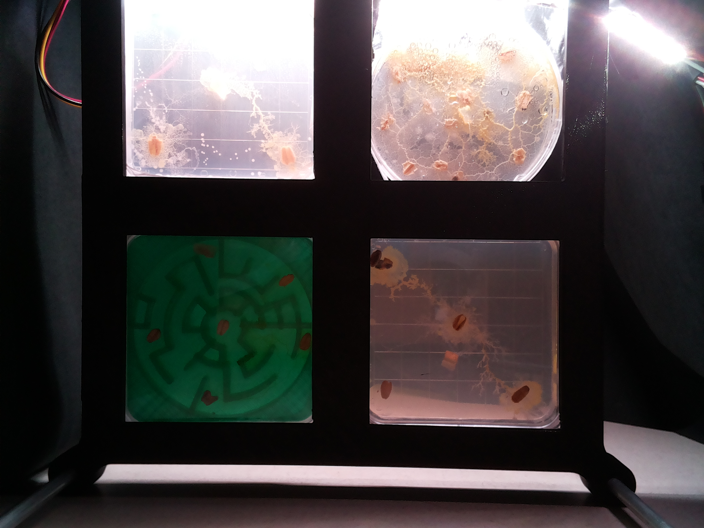
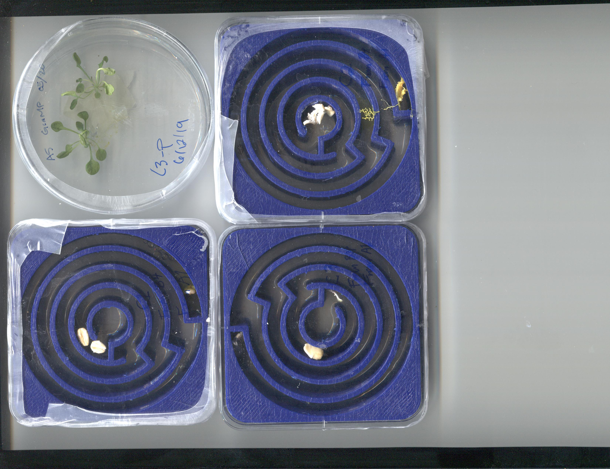
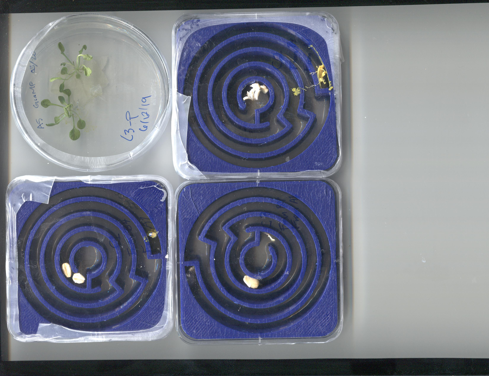

In 2019 the MadWest team flew Physarum polycephalum — a single-celled organism famous for finding shortest paths through mazes — on a sounding rocket to ask whether the stress of launch changes how it thinks. Named for the Greek myth of the labyrinth, Project Ariadne combined a rocket flight with a post-flight maze-solving experiment, probing hypergravity-induced behavioural changes in a living biocomputer.
Each MadWest launch sharpened the team's hypothesis. Project Ariadne was the fourth mission in the series, and it asked a new question: what happens to cognition under hypergravity?
Early-flowering under flight stress (Launch 1) and a qPCR gene-expression panel showing a defence-signalling shift (Reggies' Veggies, Launch 2).
Populus tremula × ectomycorrhiza — the symbiotic fungus turned parasitic rather than protective, mirroring a self-preservation response to hypergravity stress.
Physarum polycephalum — a protist that solves mazes using network-flow logic. Does the stress of rocket flight change its problem-solving behaviour?
Physarum polycephalum is a plasmodial slime mould — technically a single-celled protist, not a fungus or plant, despite its colloquial name. In its active (plasmodium) phase it forms a yellow, vein-like network that explores its environment by extending and retracting tubes, optimising resource flow like a living road-network algorithm.
It moves through three behavioural phases:
The sporulation phase is a preservation strategy: the organism trades growth for survival. This made it the ideal organism to test the hypergravity-preservation hypothesis.
Physarum is also a celebrated model for biocomputing: in 2000 it was shown to find the shortest path through a maze; later work modelled the Tokyo rail network using the organism's network-optimisation logic. Project Ariadne exploited this property with 3D-printed mazes of five different types.

The flashlapse imaging rig showing four sample chambers lit from behind: top-left, a square plate with slime mould spreading in a branching network; top-right, a round dish with heavy sporulation (orange/brown patches); bottom-left, a green 3D-printed maze with growth visible; bottom-right, a square plate with a minimal early network. Scanner-timelapse imaging of the blue spiral mazes ran in parallel.
The flight payload contained Physarum cultures in sealed petri dishes. Post-recovery, cultures were split into three groups and transferred into 3D-printed maze plates to measure whether flight-stressed organisms solve mazes differently from ground controls.
Cultures that never flew — maintained on the ground throughout the experiment. These set the reference behaviour: how does an unstressed Physarum solve a maze?
Cultures that flew inside the rocket payload. Exposed to the full launch profile: high-G boost, ballistic coast, and recovery loads. Hypothesis: these will sporulate — the preservation response to extreme mechanical stress.
Equal portions of baseline and stress cultures combined after recovery. Mixing allows the ground and flown plasmodia to interact. Hypothesis: the hybrid will reinforce the plasmodium network first, then sporulate — a delayed response.
The team designed and 3D-printed six versions of five maze types, each probing a different aspect of slime-mould decision-making:
| Maze type | What it tests |
|---|---|
| Maze 1 | Basic point-to-point navigation — does the organism find food at the exit? |
| Maze 2 | Multi-path routing — can it select the more efficient of two routes to a food source? |
| Maze 3 | No-solution maze — tests response when there is no path to food. Does a stressed organism behave differently when it cannot solve the problem? |
| Maze 4 | Long-simple vs. short-complex route — a longer, straighter path competes with a shorter, more tortuous one. Does hypergravity stress change route preference? |
| Maze 5 | Network-expansion challenge — multiple distributed food sources; tests whether the organism forms an efficient spanning network or over-extends. |
Flatbed scanners imaged the blue spiral maze plates through the bottom of the phytagel at 30–60 minute intervals. Phytagel (rather than agar) was required for bottom-imaging because it sets clear. Plates were sealed with Parafilm and stored in a dark cabinet between scans.

Day 1 (June 13 2019) — three blue spiral maze plates imaged from below on a flatbed scanner. The top-right plate is labelled C3-F (Control 3, Flight group); the white material at the maze entrance is the Physarum plasmodium beginning to explore the channels. The other two plates show empty mazes seeded with oat grains (cream-coloured objects) at the exit positions. Top-left: a round dish from a parallel propagation culture.

Day 2 (June 14 2019) — the same three plates approximately 24 hours later. The Physarum network in the Flight group maze has extended further into the spiral channels, consistent with the explorative phase. Detailed time-series analysis of growth rate, network extent, and maze completion is in the project data archive.
Flight exposes the plasmodium to high-G forces during boost and recovery. If the hypergravity-preservation theme seen in the earlier missions holds, the flown culture will shift toward sporulation — converting the active plasmodium into dormant spore bodies rather than solving the maze. Sporulation rate and network coverage in the mazes serve as the primary readouts.
When ground and flown plasmodia are mixed, the intact (ground) cells may signal to the stressed (flown) cells. The hypothesis is that the hybrid will first reinforce the plasmodium network — the healthy ground fraction stabilising the system — before eventually sporulating. If correct, the hybrid should out-perform the stress group in maze navigation time while eventually reaching the same endpoint.
Nutrient medium: 3 g/L sucrose + 5 g/L phytagel in deionised water,
autoclaved 30 min. Poured ~25 ml into round dishes, ~35–45 ml into square dishes and mazes.
Nutrientless medium: 10 g/L phytagel (no sucrose); oat grains are the
sole food source — placed at maze entrance (1 oat) and exit (2–3 oats).
All media preparation and culture transfers were performed in a biological safety cabinet
(BSC). Mazes were poured with nutrient medium under aseptic conditions (~35 ml per maze),
allowed to air-dry 30–60 min, and stored in the fridge overnight before use.
Inoculation: 1 cm² plasmodium piece (≥ 75% vein coverage) placed on the start oat.
Plates were imaged from below on a flatbed scanner at 30–60 min intervals. Phytagel (vs. agar) was required because it sets clear, enabling bottom-imaging. Images were stored in dated folders (Pictures/Ariadne/[date]). A parallel flashlapse system captured overhead time-series of petri dish cultures at higher temporal resolution.
Full protocols (nutrient media prep, nutrientless media prep, maze pouring, slime mould
propagation, maze propagation, and scanning imaging guide) are preserved as lab documents
authored by the 2019 student team (Brady Nilsson, Sophia Zappia, Hyun-seok Chang,
Lizzy Larson) in the project archive and are being formatted for the methods appendix.
See asgsr_submission/ariadne_methods.md
for the working draft.
Student surnames to be added with consent confirmation before public release.
Physarum polycephalum finds the shortest path through a maze using only local chemical gradients and tube-flow feedback — no central nervous system, no neurons. In 2000, Toshiyuki Nakagaki showed it solves mazes as efficiently as engineered algorithms. Later work used the organism to model the Tokyo subway network, revealing that evolution had independently discovered near-optimal transport topologies. Project Ariadne asked whether rocket-induced hypergravity disrupts this distributed intelligence — a question at the boundary of space biology and biocomputing.